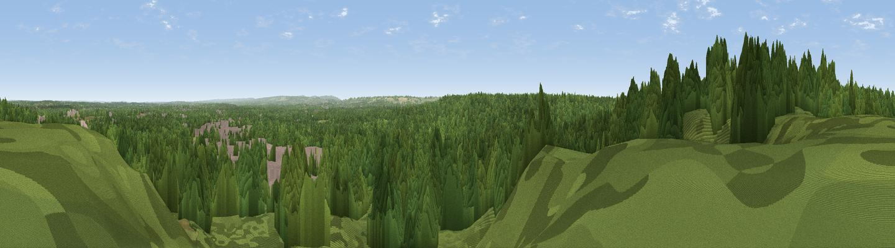

Old Windmill Hill
#37231 in England · top 45% of its area beats it · near DeepcutWhere it is
The exact computed spot (SU 91775 56925). Click the marker for map links.
The view, rendered

A 360° render of this exact spot computed from the terrain model, tree cover and land cover — summer colours, afternoon light, calibrated against photographs of famous viewpoints. Real trees, hedges and buildings will differ in detail.
The panorama
Grey silhouette: terrain skyline in each direction (720 bearings, Earth curvature and refraction included). Dashed green: skyline with trees (+15 m) and buildings (+8 m) as obstacles. Blue strip: how far the ground is visible on each bearing.
Where the view opens
Wedge length = distance to the farthest visible ground on that bearing (vegetation-aware). Rings at 10, 25 and 50 km.
What fills the view
79% woodland · 12% grassland · 9% built-up ·
Angular shares of the visible panorama (visual magnitude), not map area. Landscape diversity 0.30 (0–1 Shannon).
Key numbers
More beautiful places nearby
The staircase of upgrades: each row has a higher view potential than everything closer. Driving times are estimates from straight-line distance, calibrated against real road routing — check an actual route before setting out.
| Place | Direction | Drive | Score |
|---|---|---|---|
| Viewpoint near Deepcut | SSW · 1 km | ~4 min | 41.9 |
| High Curley Hill | N · 5 km | ~11 min | 49.7 |
| Viewpoint near Puttenham | S · 9 km | ~17 min | 62.0 |
| Viewpoint near Wanborough | SSE · 9 km | ~18 min | 65.5 |
| Viewpoint near Compton | SSE · 9 km | ~18 min | 66.7 |
| Viewpoint near Hascombe | SSE · 20 km | ~34 min | 70.1 |
| Viewpoint near Coldharbour | ESE · 26 km | ~42 min | 71.3 |
| Viewpoint near Fernhurst | S · 28 km | ~44 min | 75.1 |
51.30406, -0.68487 · source: osm peak · position refined by local search. Computed location — check access rights before visiting.